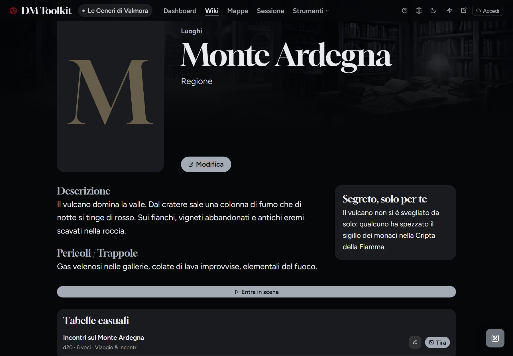
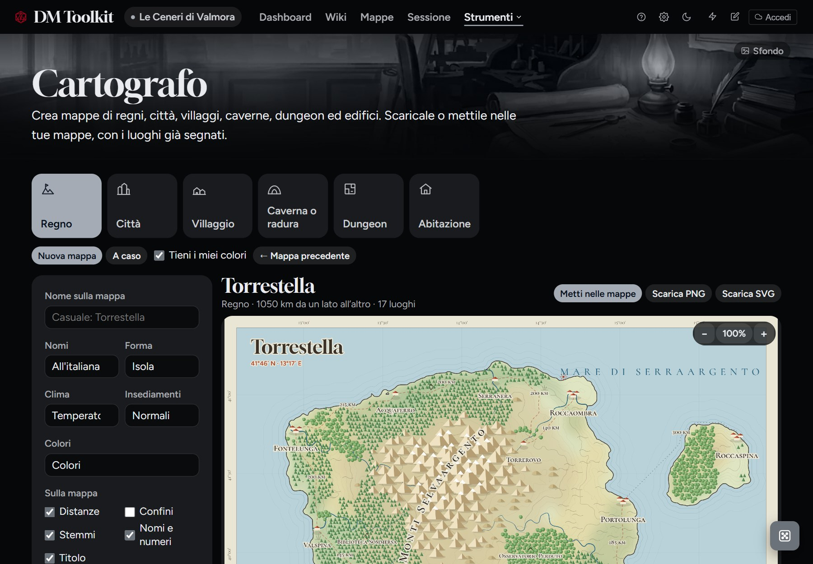
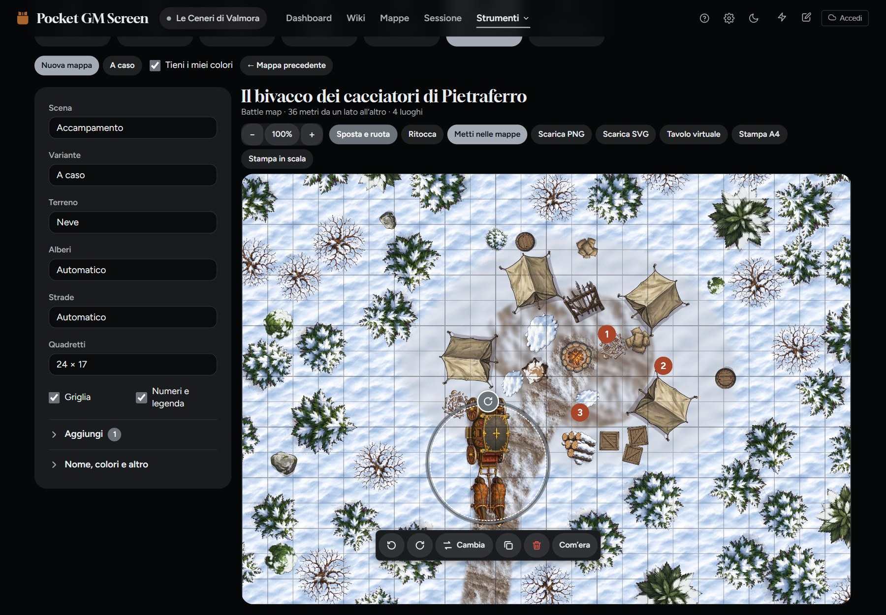
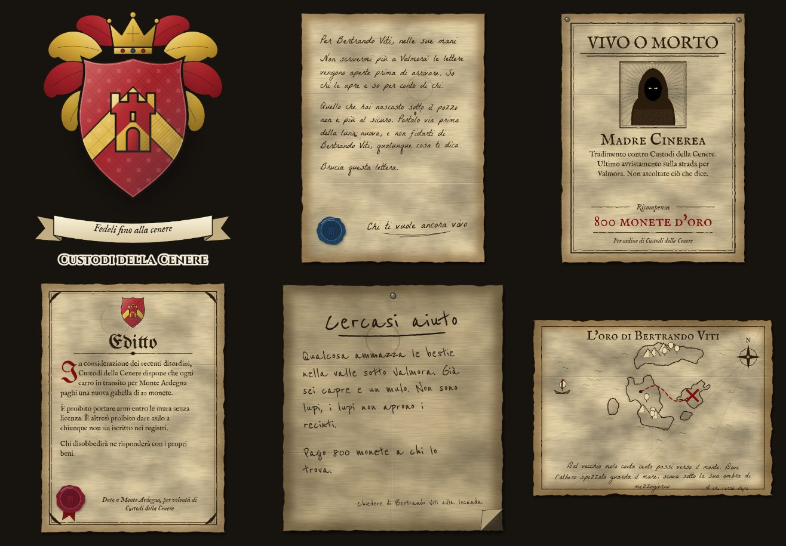
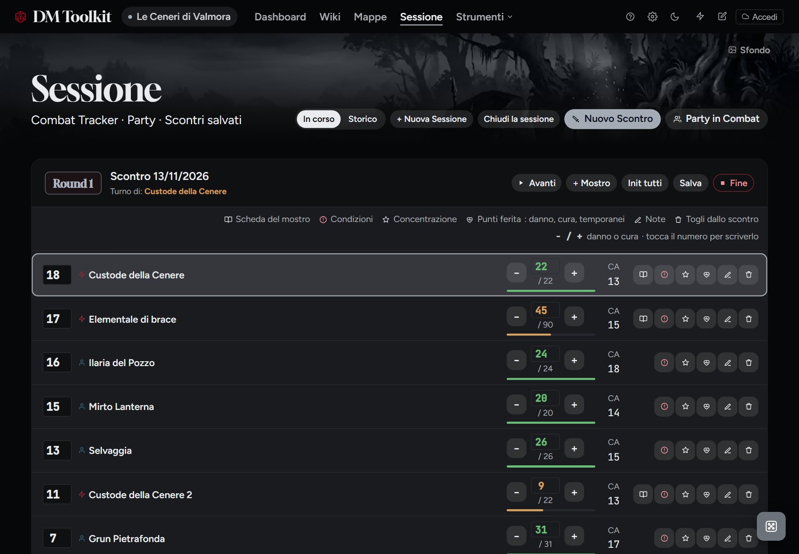
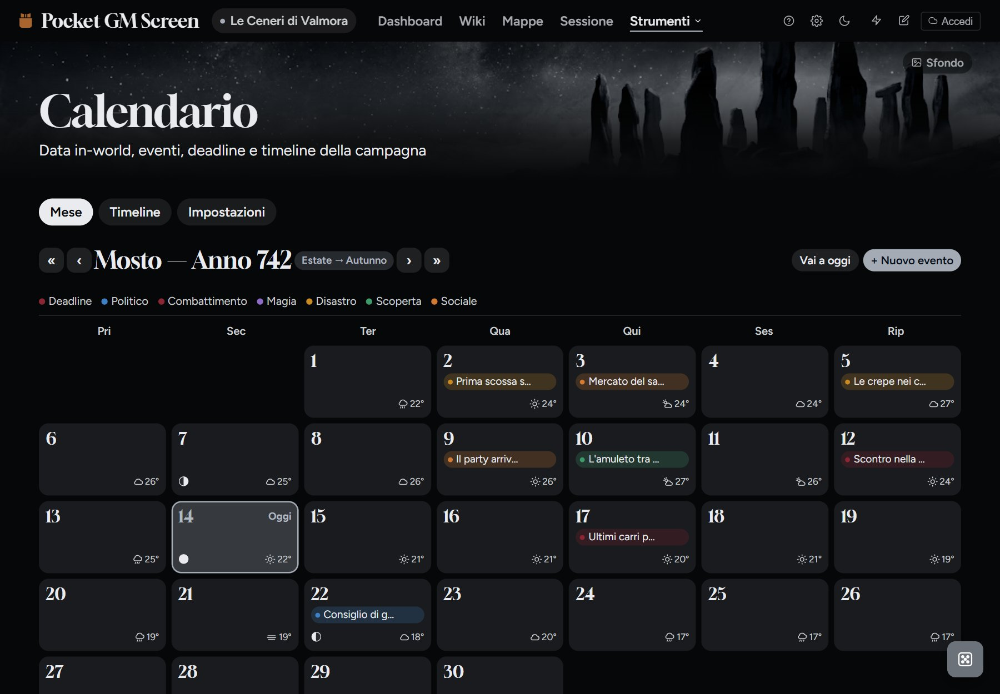
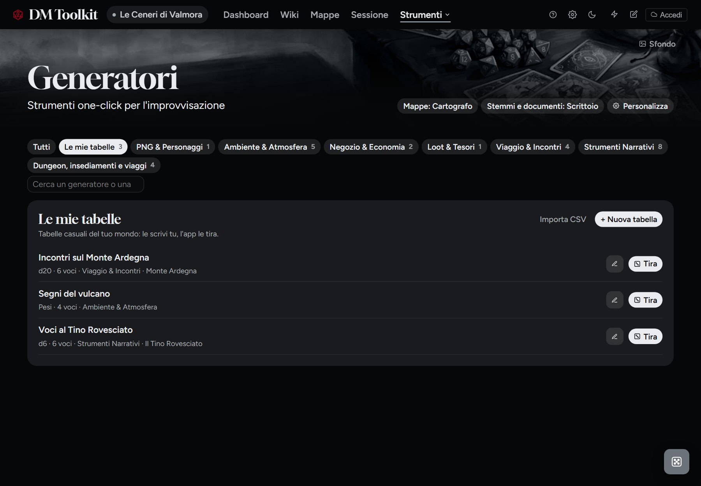
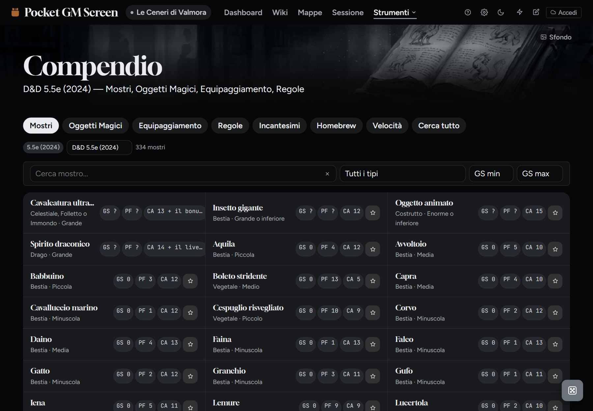
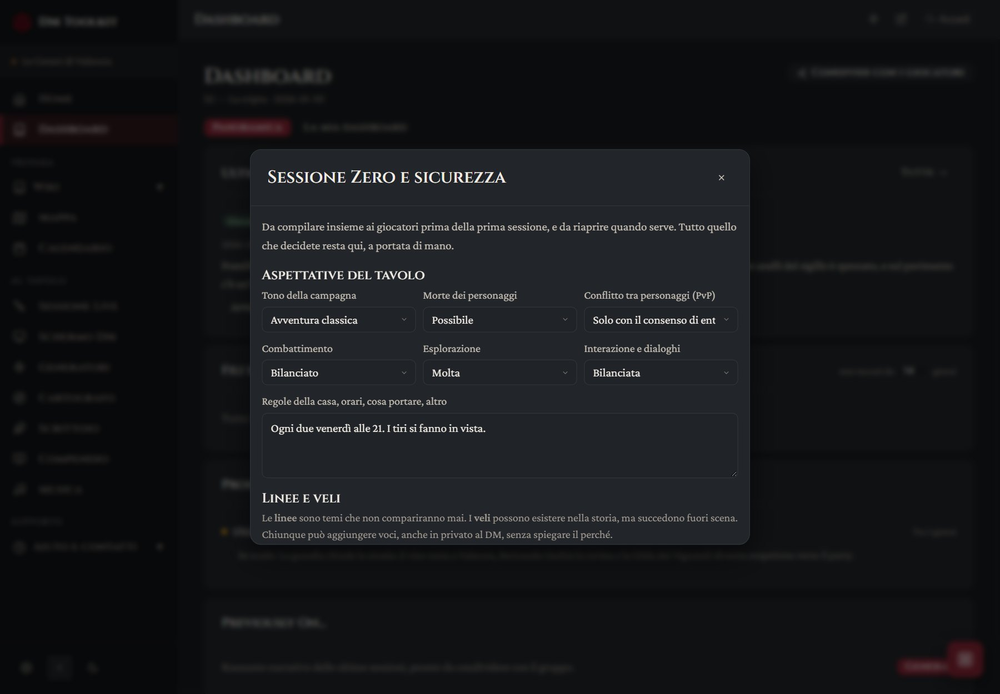
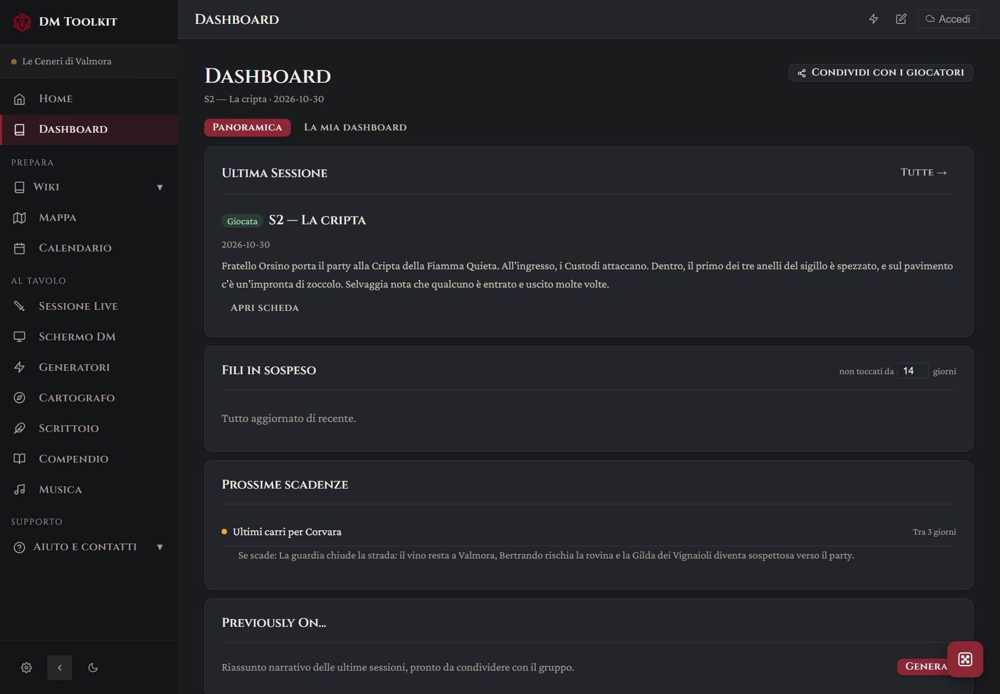

Le funzioni di Pocket GM Screen
Dalla preparazione al tavolo. Puoi vederle tutte all’opera nella campagna di esempio.
Wiki e mondo
Tutto ciò che scrivi resta collegato, così non cerchi mai due volte la stessa cosa.
- Note collegate: scrivi
[[Nome PNG]]o una @menzione e la nota porta alla sua scheda. Ogni nota sa chi la cita, e se rinomini un elemento i collegamenti si aggiornano. - Schede pronte: PNG, luoghi, fazioni, quest, PG, trame e incontri, con ritratti e statistiche complete.
- Grafo: tutti i legami della campagna in una vista cliccabile.
- Reputazione con le fazioni: da nemica giurata a devota, con la cronologia di cosa l’ha fatta cambiare.
- Segreti e indizi: ogni indizio sta in un PNG, un luogo o una quest, e ti avvisa quando un segreto ne ha meno di tre.
- Entra in scena: nella scheda di un luogo, un pulsante compone la scena con PNG, quest, tempo, rumori e odori.
- Import da foglio di calcolo: porta dentro quello che hai già scritto, anche da Excel in italiano.

Mappe e Cartografo
Carica le tue mappe o generane di nuove: regni, città, villaggi, caverne, radure, dungeon ed edifici.
- Dal regno alla locanda: clicchi il segnaposto di un luogo e generi la sua mappa, già collegata e con ciò che si vede dall’alto, come mare e fiume.
- Pronte da usare: scala impostata e luoghi segnati dai segnaposto con le loro note. A richiesta crea anche le schede nella Wiki.
- Percorsi e viaggi: clicchi una tappa dopo l’altra, sui segnaposto o lungo la strada, e vedi i km di ogni tratto e quanto ci vuole a piedi, a cavallo, in barca o in nave, secondo il terreno. Il tempo del viaggio passa anche nel calendario.
- Esagoni ed esplorazione: una griglia esagonale da accendere su ogni mappa. Segni gli esagoni esplorati, sposti il gruppo e vedi quanto dura il viaggio, scrivi note che vedi solo tu.
- Regni con i confini: da due a sei regni, con confini che seguono monti e fiumi e il nome di ogni regno sulla mappa.
- Città vere: mura, castello, porto, il cimitero fuori dalle porte e le baracche addossate alle mura.
- Dungeon su più livelli: fino a tre, collegati dalle scale.
- Ritocchi: rinomini o nascondi i nomi sulla mappa e aggiungi scritte tue con un tocco.
- Al tavolo, anche con le miniature: dungeon e case si esportano per Foundry, Roll20 e gli altri tavoli virtuali, con muri e porte già pronti, o si stampano in scala su fogli A4 da unire.
- Tre colori: Carta, chiara e da stampare; Colori, con prati, boschi e mari colorati; Notte, su blu notte. Montagne, boschi e città si riconoscono a colpo d’occhio.
- Nomi per ogni popolo: all’italiana, elfici, nanici, orcheschi o nordici. La mappa di un luogo eredita i nomi della regione da cui nasce.
- Il caso, se vuoi: scegli ogni opzione oppure lasciala al caso, tenendo i tuoi colori.
- PNG e SVG: scarica la mappa per stamparla o usarla altrove.

Battle map
Mappe a quadretti per lo scontro, con terreni e oggetti dipinti, generate in un tocco nel Cartografo.
- Dodici scene: bosco, fiume, accampamento, rovine, palude, villaggio, mercato, cimitero, porto e costa, caverna, cripta e interno di locanda, ognuna con più varianti.
- Terreno a scelta: prato, erba secca, fango, neve o deserto. Con la neve arrivano pini innevati e stagni ghiacciati, nel deserto palme, cactus e rocce di arenaria.
- Come la vuoi tu: quanti alberi, se ci sono strade, quanti quadretti (fino a un foglio A4 intero) e cosa aggiungere: carrozza, carro, pozzo, tesoro, statua e altro.
- Sposta e ruota: trascini un oggetto dove vuoi, lo ruoti, lo duplichi o lo elimini. Con Cambia scegli un altro tipo di carrozza, statua o albero; Com’era lo rimette al suo posto.
- Punti numerati: i luoghi importanti hanno un numero, con copertura e terreno difficile nella legenda per il master.
- Al tavolo: stampa in scala su fogli A4 per le miniature, stampa su un solo A4 con la legenda per il master, oppure esporta per Foundry, Roll20 e gli altri tavoli virtuali.

Scrittoio
Quello che i giocatori possono tenere in mano, scritto con i nomi della tua campagna.
- Stemmi: forma, colori, simbolo, corona, mantello e motto, per fazioni e luoghi, con la blasonatura scritta sotto. Se ne hai uno tuo, caricalo nella scheda.
- Documenti: lettere sigillate, taglie, editti, avvisi da bacheca, mappe del tesoro, gazzette, contratti e menu della locanda, con macchie di sangue, vino o cera se vuoi.
- Scrivi tu: ogni testo si cambia, puoi partire da un foglio bianco e riaprire quello che hai salvato.
- Da passare al tavolo: a schermo intero sul tablet, oppure nella pagina dei giocatori.
- Sigilli veri: lo stemma di una fazione finisce sui suoi editti e sulla ceralacca delle sue lettere.

Sessioni e combattimento
Dal primo tiro di iniziativa al riassunto della volta dopo.
- Scontri: iniziativa, PF, CA, condizioni, concentrazione con CD automatica, effetti con conto alla rovescia.
- Scaletta delle scene: la scaletta della sessione, riordinabile.
- Chiudi la sessione in 5 domande: dalle risposte si compilano diario, ganci, prossima sessione e riassunto per il gruppo.
- Il mondo si muove: dopo ogni sessione ogni fazione fa una mossa fuori scena.
- Clock: per rituali, inseguimenti e pressione delle fazioni.
- Lanciadadi: sempre a portata di mano, con formule come
4d6kh3e il registro degli ultimi tiri. - Schermo sempre acceso: su tablet e telefono lo schermo non si spegne durante uno scontro.

Calendario
Il tempo del tuo mondo, con il cielo e il tempo che fa.
- Il tuo calendario: mesi, settimane, festività, anni bisestili ed ere, oppure un calendario già pronto.
- Lune, stagioni e meteo: le fasi di ogni luna e il tempo di ogni giorno, secondo il clima, sempre uguale per la stessa data.
- Eventi e scadenze: con promemoria e conseguenze, anche ricorrenti ogni anno o ogni mese.
- Il tempo passa: con i riposi, i viaggi e i pulsanti dello schermo del DM.
- Timeline: eventi e sessioni su una linea, leggibile a ogni zoom.

Generatori e tabelle
Quando i giocatori vanno dove non avevi previsto.
- 22 generatori: PNG, meteo, negozi, bottino, incontri, trappole, enigmi, taverne, voci di corridoio e altri ancora.
- Usano la tua campagna: i nomi non ripetono quelli dei tuoi PNG, e le voci di corridoio citano le tue schede.
- Le mie tabelle: le tabelle casuali del tuo mondo, con dadi, pesi e tabelle che ne richiamano altre. Pescano i nomi della tua campagna, tirano più volte senza doppioni e si importano da Excel o Google Fogli.

Compendio
Regole e mostri a portata di mano, nelle edizioni 2014 e 2024.
- SRD 5.1 e 5.2.1: mostri, incantesimi, oggetti magici, equipaggiamento e regole, con ricerca e filtri.
- Mostri modificabili: cambi il Grado di Sfida e si ricalcolano PF, CA, attacchi, danni e CD. Poi lo mandi al combattimento.
- Homebrew: le tue note con tag
#mostroo#oggettofiniscono nel Compendio.

Sessione Zero e tavolo
Mettersi d’accordo prima, e avere il necessario sotto mano durante.
- Sessione Zero: aspettative del tavolo, linee e veli, e strumenti di sicurezza spiegati uno per uno.
- Schermo del DM: blocchi trascinabili con percezioni passive, dadi, meteo, condizioni e i tuoi generatori.
- Calendario del mondo: mesi e festività su misura, eventi, scadenze con le loro conseguenze e timeline.
- Ovunque, anche offline: si installa su telefono, tablet e PC e, dopo la prima apertura con internet, regole, incantesimi e campagna restano disponibili senza rete.

Musica e atmosfere
La colonna sonora della campagna, pronta prima di sedersi al tavolo.
- Una playlist per atmosfera: taverna, battaglia, esplorazione, il tema di un nemico, ognuna con la sua descrizione.
- I tuoi link: YouTube, Spotify, Tabletop Audio e Google Drive. Si salvano solo i link: nessun file audio passa dall’app.
- Ascolta qui: i video di YouTube suonano dentro l’app e continuano mentre usi il resto. Per la musica serve internet.
- Nello Schermo del DM: il blocco Musica e atmosfere tiene le playlist accanto a dadi e condizioni.

Giocatori e condivisione
I giocatori vedono quello che decidi tu, e niente di più.
- Vista giocatori: un link di sola lettura con riassunti, iniziativa in diretta, luoghi, documenti e mappe che scegli tu.
- I segreti restano tuoi: i giocatori non vedono mai la campagna: ricevono una copia ridotta, senza i riquadri Segreto DM.
- Co-autori: mandi un invito e un altro master lavora con te in tempo reale, con il suo account. Gli inviti si annullano quando vuoi.
- Google Drive: la campagna e le immagini stanno sul tuo Drive e arrivano su ogni dispositivo.
